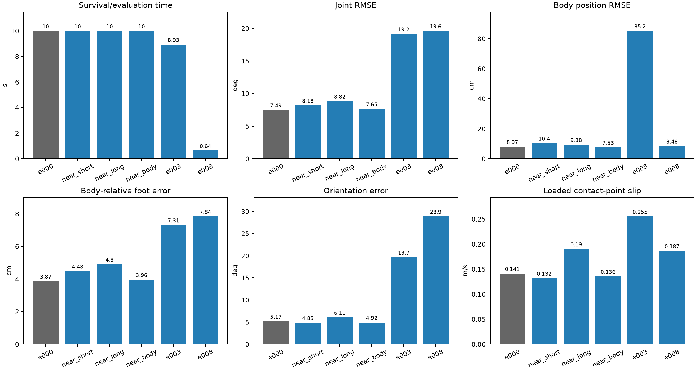
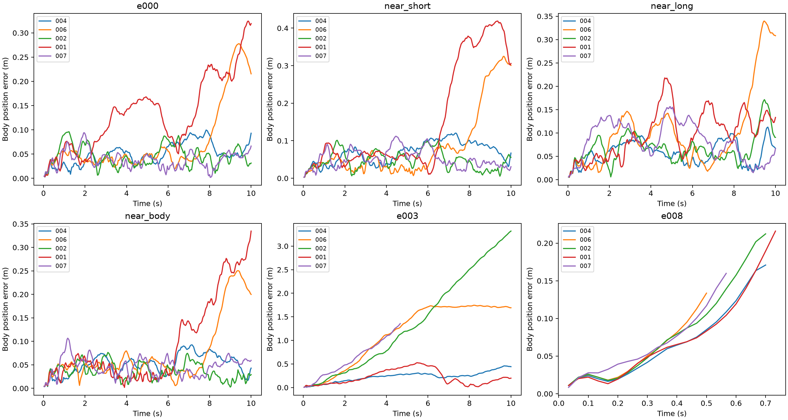

2026년 10월 29일 · 재학습 없음 · 기존 모션 5개 × 새로운 형상 5개
다른 형상에서의 10초 생존은 19/25, 생존과 추종 오차 선별을 함께 만족한 실행은 0/25다. 학습 형상 e000의 기존 MJX 평가는 생존 5/5, 오차 선별 0/5였다. 따라서 새 형상의 선별 미달을 모두 형상 전이만의 문제로 해석하면 안 되며, e000에서 이미 남은 오차와 추가 악화를 구분해야 한다.
결론: 가까운 형상 변형에서는 기존 정책이 생존을 유지했지만, 넓은 형상 범위에 그대로 적용하기에는 부족하다. e003은 몸통 위치 오차가 평균 85.2cm로 커졌고 e008은 평균 0.64초에 전도됐다. 현재 정책을 128개 형상 전체의 안정적인 수집기로 가정해서는 안 된다. 재학습이 필요하다면 형상마다 별개 정책을 만드는 대신 여러 형상에서 공유하는 정책의 학습을 우선 검토할 수 있다.
5,246,976 스텝 e000 PPO 체크포인트 하나를 고정했다. topology 00000011·무릎 방향·팔 제거는 유지하고 E만 바꿨다. 각 E에서 같은 A1 원본 5개를 다시 리타겟팅해 목표를 만들었다. 30Hz·발 고정 보정 없음, MJX GPU 300Hz, KP 30·KD 0.5, 토크 ±33.5N·m, 마찰 0.8, 자기 충돌 끔·바닥 충돌 유지, seed 0과 기존 관측 잡음을 유지했다.
새 형상에 e000의 초기 자세를 그대로 복사하지 않았다. 각 형상의 목표 첫 자세·차분 속도에서 시작했으며, 10초 종료 또는 몸통 위쪽 축의 수직 성분 0.5 미만 전도까지 실행했다. 중간 초기화·추가 PPO 학습·형상별 정책 튜닝은 없다. 형상을 하나씩 처리해 GPU 메모리 누적을 제한했다.
숫자는 각 형상에서 모션 5개의 평균이다. 조기 전도가 있는 행은 평가 시간이 짧으므로 작은 오차를 더 좋은 추종으로 해석하지 않는다.
| 형상 | 10초 생존 | 오차 선별 | 평균 평가(s) | 관절 RMSE(°) | 몸통 위치 RMSE(cm) | 몸체 기준 발 오차(cm) | 자세 오차(°) | 접지 미끄러짐(m/s) |
|---|---|---|---|---|---|---|---|---|
| 학습 형상 e000 | 5/5 | 0/5 | 10.00 | 7.49 | 8.07 | 3.87 | 5.17 | 0.141 |
| 허벅지 연장·종아리 단축 | 5/5 | 0/5 | 10.00 | 8.18 | 10.39 | 4.48 | 4.85 | 0.132 |
| 허벅지 단축·종아리 연장 | 5/5 | 0/5 | 10.00 | 8.82 | 9.38 | 4.90 | 6.11 | 0.190 |
| 몸통·무게중심 변화 | 5/5 | 0/5 | 10.00 | 7.65 | 7.53 | 3.96 | 4.92 | 0.136 |
| 분산 형상 e003 | 4/5 | 0/5 | 8.93 | 19.15 | 85.19 | 7.31 | 19.65 | 0.255 |
| 분산 형상 e008 | 0/5 | 0/5 | 0.64 | 19.61 | 8.48 | 7.84 | 28.88 | 0.187 |


다리 비율 두 변형은 E의 3·4·9·10 좌표를 각각 0.4 또는 0.6으로 변경했다. 이 좌표의 물리 길이 변화 방향은 동일하지 않아, 총 다리 길이만 늘이거나 줄인 실험이 아니다. 몸통 변형은 E의 1·2를 0.6으로 변경했다. e003·e008은 기존 형상 목록의 분산 샘플이다. 모두 이번 e000 전용 PPO의 학습 형상이 아니다.
| 형상 | 총 질량(kg) | 모션별 평균 발 목표 오차 중 최댓값(mm) | 역동역학 불일치 비율 중 최댓값 | 첫 자세 최대 바닥 관통(mm) |
|---|---|---|---|---|
| 허벅지 연장·종아리 단축 | 13.365 | 0.223 | 0.00% | 1.02 |
| 허벅지 단축·종아리 연장 | 13.154 | 0.218 | 0.00% | 0.97 |
| 몸통·무게중심 변화 | 13.430 | 0.218 | 0.00% | 0.99 |
| 분산 형상 e003 | 12.748 | 0.957 | 0.00% | 0.81 |
| 분산 형상 e008 | 12.277 | 0.360 | 0.00% | 1.18 |
기하학적 발 오차가 작아도 동적 수행 가능성을 보장하지 않는다. 목표의 역동역학 불일치나 초기 관통이 큰 형상은 제어기 전이와 목표 난도가 함께 영향을 줄 수 있다. 여기서는 초기 상태를 숨겨 보정하거나 불리한 모션을 제외하지 않았다.
E = 0.500, 0.500, 0.500, 0.500, 0.500, 0.500, 0.500, 0.500, 0.500, 0.500, 0.500, 0.500, 0.500
| 모션 | 시간(s) | 전도 | 관절 RMSE(°) | 몸통 위치 RMSE(cm) | 몸체 기준 발 오차(cm) | 미끄러짐(m/s) |
|---|---|---|---|---|---|---|
| calm_random_004 | 10.00 | 없음 | 7.51 | 5.45 | 3.95 | 0.145 |
| calm_random_006 | 10.00 | 없음 | 7.12 | 10.33 | 3.59 | 0.115 |
| calm_random_002 | 10.00 | 없음 | 7.06 | 5.11 | 3.68 | 0.121 |
| calm_random_001 | 10.00 | 없음 | 8.70 | 15.23 | 4.52 | 0.207 |
| calm_random_007 | 10.00 | 없음 | 7.08 | 4.22 | 3.59 | 0.119 |
E = 0.500, 0.500, 0.500, 0.400, 0.400, 0.500, 0.500, 0.500, 0.500, 0.400, 0.400, 0.500, 0.500
| 모션 | 시간(s) | 전도 | 관절 RMSE(°) | 몸통 위치 RMSE(cm) | 몸체 기준 발 오차(cm) | 미끄러짐(m/s) |
|---|---|---|---|---|---|---|
| calm_random_004 | 10.00 | 없음 | 7.91 | 7.39 | 4.20 | 0.121 |
| calm_random_006 | 10.00 | 없음 | 7.94 | 12.58 | 4.37 | 0.110 |
| calm_random_002 | 10.00 | 없음 | 7.92 | 5.37 | 4.39 | 0.111 |
| calm_random_001 | 10.00 | 없음 | 9.03 | 20.84 | 4.86 | 0.197 |
| calm_random_007 | 10.00 | 없음 | 8.09 | 5.75 | 4.60 | 0.121 |
E = 0.500, 0.500, 0.500, 0.600, 0.600, 0.500, 0.500, 0.500, 0.500, 0.600, 0.600, 0.500, 0.500
| 모션 | 시간(s) | 전도 | 관절 RMSE(°) | 몸통 위치 RMSE(cm) | 몸체 기준 발 오차(cm) | 미끄러짐(m/s) |
|---|---|---|---|---|---|---|
| calm_random_004 | 10.00 | 없음 | 8.91 | 6.22 | 4.90 | 0.202 |
| calm_random_006 | 10.00 | 없음 | 8.25 | 13.13 | 4.49 | 0.141 |
| calm_random_002 | 10.00 | 없음 | 8.09 | 7.39 | 4.59 | 0.141 |
| calm_random_001 | 10.00 | 없음 | 11.06 | 10.98 | 6.40 | 0.299 |
| calm_random_007 | 10.00 | 없음 | 7.83 | 9.18 | 4.15 | 0.169 |
E = 0.500, 0.600, 0.600, 0.500, 0.500, 0.500, 0.500, 0.500, 0.500, 0.500, 0.500, 0.500, 0.500
| 모션 | 시간(s) | 전도 | 관절 RMSE(°) | 몸통 위치 RMSE(cm) | 몸체 기준 발 오차(cm) | 미끄러짐(m/s) |
|---|---|---|---|---|---|---|
| calm_random_004 | 10.00 | 없음 | 7.81 | 5.49 | 4.09 | 0.152 |
| calm_random_006 | 10.00 | 없음 | 7.11 | 10.00 | 3.61 | 0.098 |
| calm_random_002 | 10.00 | 없음 | 7.13 | 4.01 | 3.63 | 0.125 |
| calm_random_001 | 10.00 | 없음 | 9.08 | 13.12 | 4.80 | 0.181 |
| calm_random_007 | 10.00 | 없음 | 7.13 | 5.02 | 3.67 | 0.122 |
E = 0.500, 0.890, 0.672, 0.878, 0.993, 0.479, 0.347, 0.701, 0.267, 0.522, 0.266, 0.500, 0.500
| 모션 | 시간(s) | 전도 | 관절 RMSE(°) | 몸통 위치 RMSE(cm) | 몸체 기준 발 오차(cm) | 미끄러짐(m/s) |
|---|---|---|---|---|---|---|
| calm_random_004 | 10.00 | 없음 | 17.52 | 25.27 | 6.91 | 0.210 |
| calm_random_006 | 10.00 | 없음 | 18.10 | 131.03 | 6.89 | 0.190 |
| calm_random_002 | 10.00 | 없음 | 22.34 | 171.31 | 7.91 | 0.195 |
| calm_random_001 | 10.00 | 없음 | 18.62 | 26.64 | 7.70 | 0.358 |
| calm_random_007 | 4.67 | 발생 | 19.17 | 71.70 | 7.15 | 0.324 |
E = 0.500, 0.851, 0.108, 0.649, 0.696, 0.747, 0.874, 0.122, 0.734, 0.166, 0.761, 0.500, 0.500
| 모션 | 시간(s) | 전도 | 관절 RMSE(°) | 몸통 위치 RMSE(cm) | 몸체 기준 발 오차(cm) | 미끄러짐(m/s) |
|---|---|---|---|---|---|---|
| calm_random_004 | 0.70 | 발생 | 19.75 | 8.35 | 7.96 | 0.152 |
| calm_random_006 | 0.50 | 발생 | 19.94 | 6.44 | 8.20 | 0.174 |
| calm_random_002 | 0.70 | 발생 | 20.32 | 10.37 | 8.10 | 0.237 |
| calm_random_001 | 0.73 | 발생 | 19.67 | 9.48 | 7.85 | 0.181 |
| calm_random_007 | 0.57 | 발생 | 18.36 | 7.75 | 7.09 | 0.189 |
주황 A1 전체 외형, 보라 해당 형상의 TT 목표, 파랑 같은 형상의 TT 실제 기록이다. 하나의 바닥·카메라에서 일정한 표시 간격만 두었다. TT 외형도 각 E에 맞게 생성했다. 영상은 실제 종료 시점까지며 file:/// 절대 경로다.
현재 정책이 새로운 형상에서 어느 정도 실행되는지 보는 1차 전이 평가다. 학습에 사용한 5개 모션과 한 seed만 확인했으므로 기본 모션 전체·100개 연속동작·128형상으로의 확장 가능성을 아직 보장하지 않는다. 생존이 높더라도 정확한 추종과 동일하지 않다. 대량 수집은 이번 작업에서 진행하지 않았다.